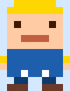
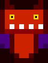

ルール
じゃんけんで勝つとダメージを与えられます。ただし、ダメージは「出す手」と「選択速度」で変わります。
出す手
グー
30
チョキ
20
パー
15
選択速度
0.25秒以内（PERFECT）
×2.0
0.50秒以内（GOOD）
×1.5
1.00秒以内（NORMAL）
×1.0
1.00秒超過
MISS
計算
ダメージ = 出す手の数値 × 選択速度の倍率
例: グーGOOD = 30 × 1.5 = 45
MISSは自分に 20 ダメージ
プレイヤー
HP:100/100

VS
敵
HP:100/100

リザルト
勝敗:
反応速度:
ランク:
あなた:
敵:
技:
ダメージ: